Company: The Coca-Cola C.
CEO: James Quincey
Year founded:: 1886
Headquarter: Atlanta, USA
Number of Employees (Dec 2019): 86,200
Public or Private: Public
Ticker Symbo: KO
Market Cap (Oct 2020): $218.25 Billion
Annual Revenue (Dec 2019): $37.27 Billion
Profit |Net income (Dec 2019): $8.92 Billion
The first thing I wanted to show is taking a quick look at the historical prices of Coca Cola. In order to do that I will extract latest stock data from pandas web-data reader and yahoo Finance.
The first thing I want to plot is the moving average, in order to have a first overlook.
A moving average (MA) is a stock indicator that is commonly used in technical analysis. The reason for calculating the moving average of a stock is to help smooth out the price data over a specified period of time by creating a constantly updated average price.
Moving averages are usually calculated to identify the trend direction of a stock or to determine its support and resistance levels.1 I decided to use the data from 2010 to 2020. I will use the closing price, which is the final price in which the stocks are traded by the end of the day. The code is the follow:
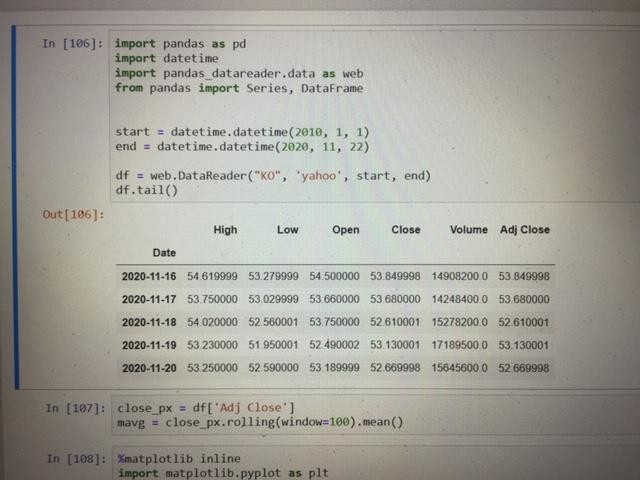
Figure 1.1
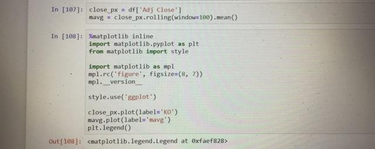
Figure 1.2
The first thing I want to do is import the libraries and modules I typically use in my analyses.
I ‘ve calculated the Moving Average for the last 100 days of the stock closing price and take the average for each of the window’s moving average. The Moving Average steadily rises over the window and does not follow the jagged line of the stock price chart. For better understanding, I plotted it out with Matplotlib. I will see the Moving Average with my Stocks Price Chart, as the following:
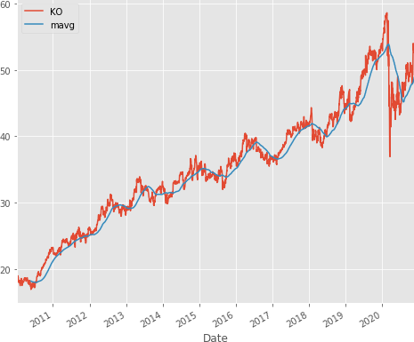
Figure 1.3
The Moving Average shows the increasing or decreasing trend of a stock price. Logically, you should buy when the stocks are experiencing a downturn and sell when the stocks are experiencing an upturn.
The next thing I want to do is to analyze the competitors of coca cola. I’ve surf on Google and I found that the main competitors of coca cola are:
I decided to analyse the competition by running the percentage change and correlation function in pandas.
Percentage change will find how much the price changes compared to the previous day which defines returns. The correlation will help to see if the returns are affected by other stock returns.
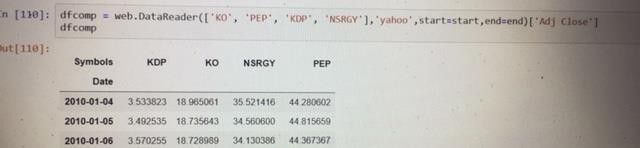
Figure 1.4
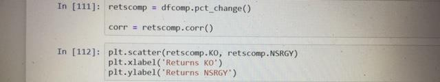
Figure 1.5
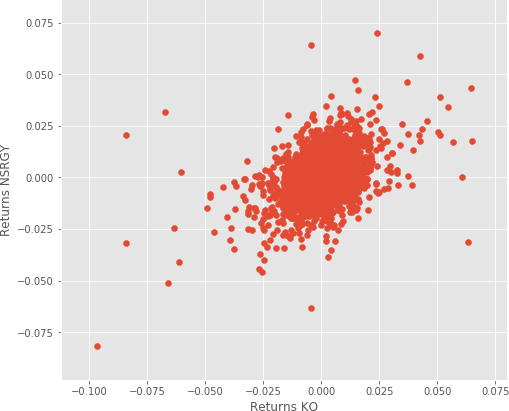
Figure 1.6
From this graph I can see there are slight positive correlations among NSRGY returns and KO returns. It seems like the higher the KO returns, the higher NSRGY returns as well for most cases.
I then decided to plot the scatter_matrix to visualize possible correlations among competing stocks. At the diagonal point, I will run a Kernel Density Estimate (KDE).In statistics, kernel density estimation (KDE) is a non-parametric way
to estimate the probability density function of a random variable. Kernel density estimation is a fundamental data smoothing problem where inferences about the population are made, based on a finite data sample.2
KDE is a fundamental data smoothing problem where inferences about the population are made on a finite data sample. It helps generate estimations of the overall distributions. The code is the following:
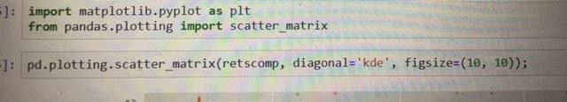
Figure 1.7
I found this graph:
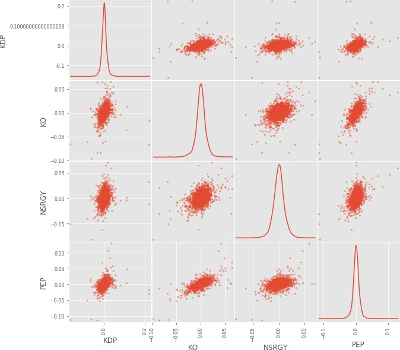
Figure 1.8
From here I could see most of the distributions among stocks which approximately positive correlations.
To prove the positive correlations, I will use heat maps to visualize the correlation ranges among the competing stocks. The lighter the color, the more correlated the two stocks are.
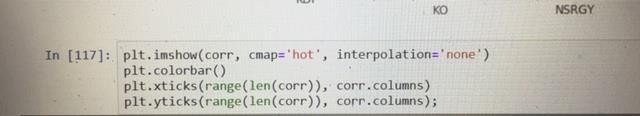
Figure 1.9
I’ve obtained the following graph:
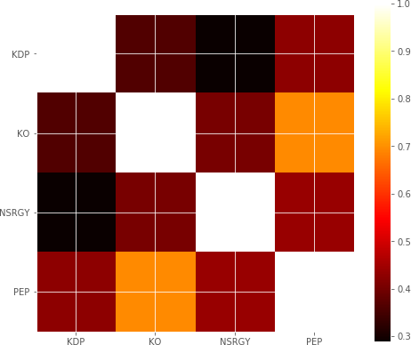
Figure 1.10
From the Scatter Matrix and Heatmap, I can find great correlations among the competing stocks.
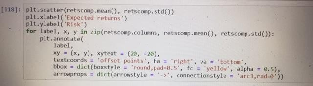
Figure 1.11
I also analysed each stock’s risks and returns. In this case, I’m extracting the average returns (Return Rate) and the standard deviation of returns (Risk). Now I could view this chart of risk and return comparisons for competing stocks. Logically, I would like to minimize the risk and maximize returns. Therefore, I may be able to draw a line for my risk-return tolerance. The line showcases your expected value threshold and your baseline for buy/sell decision.
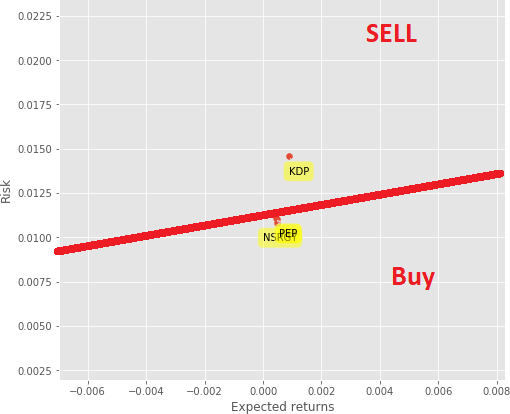
Figure 1.12
Some securities are less risky, they have a lower standard deviation and will decrease less than the market. Certain stocks have a high level of volatility and perform bad in times of crisis. Some stocks are safer and will lose less and earn less than the market portfolio while other stocks are riskier and will do well when the economy flourishes and will do poorly in times of crisis. And that's precisely where beta of a company comes in handy.
Beta of a stock measures the relationship between a stock and the market portfolio.
Beta can be calculated as the covariance between the stock and the market divided by the variance of the market. It measures the market risk that cannot be avoided through diversification.
The riskier a stock the higher its Beta.
will typically lose less
B is a measurement that shows us how risky an individual security is.
The Capital Asset Pricing Model (CAPM) describes the relationship between systematic risk and expected return for assets, particularly stocks.
The formula for calculating the expected return of an asset given its risk is as follows:
ra = rf + βa (rm - rf)
where:
rf = Risk Free Rate
rm = Expected Market Return
βa = Beta of the security
Investors expect to be compensated for risk and the time value of money. The risk-free rate in the CAPM formula accounts for the time value of money. The other components of the CAPM formula account for the investor taking on additional risk. The beta of a potential investment is a measure of how much risk the investment will add to a portfolio that looks like the market. A stock’s beta is then multiplied by the market risk premium, which is the return expected from the market above the risk-free rate. The risk-free rate is then added to the product of the stock’s beta and the market risk premium. The result should give an investor the required return or discount rate they can use to find the value of an asset. The goal of the CAPM formula is to evaluate whether a stock is fairly valued when its risk and the time value of money are compared to its expected return.3
The first indicator I choose for my financial analysis is the beta of a stock, in this case Coca-Cola (KO). The first thing I’ll do is import the libraries and modules I typically use in my analyses. Beta is typically measured with data from the past five years, so I choosed indicatively a start date on 2015. I want to calculate its beta and I will approximate the development of the market with the S&P 500 index. The first is the covariance between Ko and the S&P 500 and the second one is the variance of the S&P 500. I will need log returns; I can use NP to calculate and store them in a variable called security returns. I then calculated the variance of the market and annualized it. I obtained a beta of 0.68.
This means KO is a defensive stock. When the market goes up KO equity value will not overvalued while in times of crises you will typically lose less.
I then calculated the expected rate of return of KO, using capm formula.
I’ve obtained a expected rate of return of 0.042.
This is the return on investment a person would expect when buying stock.
In the next two photos, I’ve showed the codes.
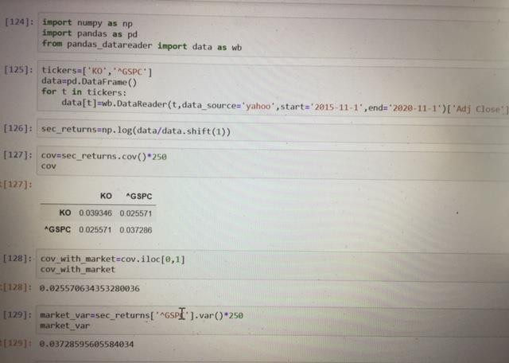
Figure 2.1
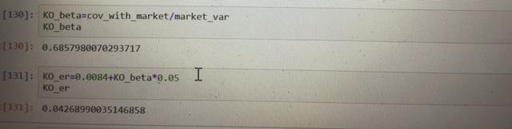
Figure 2.2
I’ve choosen rf = 0,84% corresponding to the 10 year government bonds yield, like shown in the next photo regarding Bloomberg website; equity risk premium = 5% because academic research has proven the market risk premium for equities in the US has been between 4,5% and 5,5%. So I can simply use 5% as a good approximation.
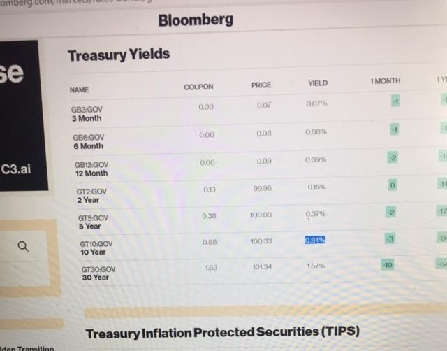
Figure 2.3
In 1952 Harry Markowitz published a paper which was one of the most powerful academic. Markowitz proved the existence of an efficient set of portfolios that optimize investors return for the amount of risk they are willing to accept. One of the most important highlights of his work is that investments in multiple securities shouldn't be analyzed separately but should be considered in a portfolio and financier's must understand how different securities in a portfolio interact with each other.
A true measure for the relationship between two securities is the covariance. And that's precisely what Markowitz suggested through the combination of securities. With low correlation Investors can optimize their returns without assuming additional risk. Markowitz assumes investors are rational and risk averse so they are interested in earning higher returns and prefer avoiding additional risk.
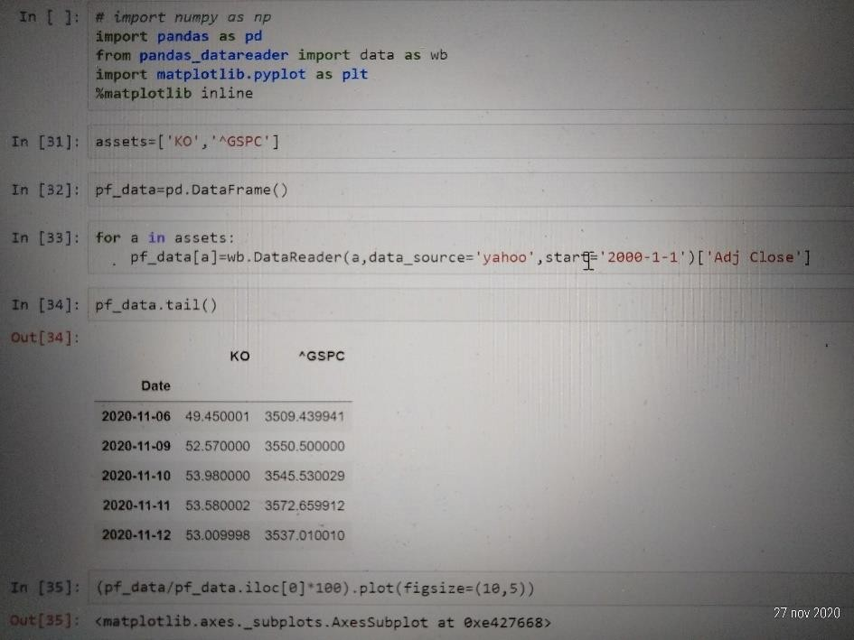
Figure 3.1
So I’ve calculated the efficient frontier of a group of portfolios composed of two assets. CocaCola (KO) stock and the S&P 500. The first thing we'll do is import the libraries and modules we typically use in our analyses. I will use data for the past 20 years starting from year 2000. I proceed with a few standard steps normalizing to 100 in applauding the portfolio data on a graph to see how the two assets have been performing throughout the time of interest.
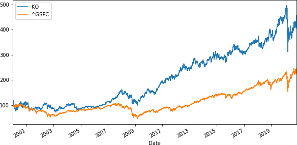
Figure 3.2
As we can see there was a gradually increasing in both the securities. We can also see how KO and S&P 500 respond to the financial crisis of 2008 and the actual crisis due to the pandemic crisis. There was a drop in the market and also a drop in KO.
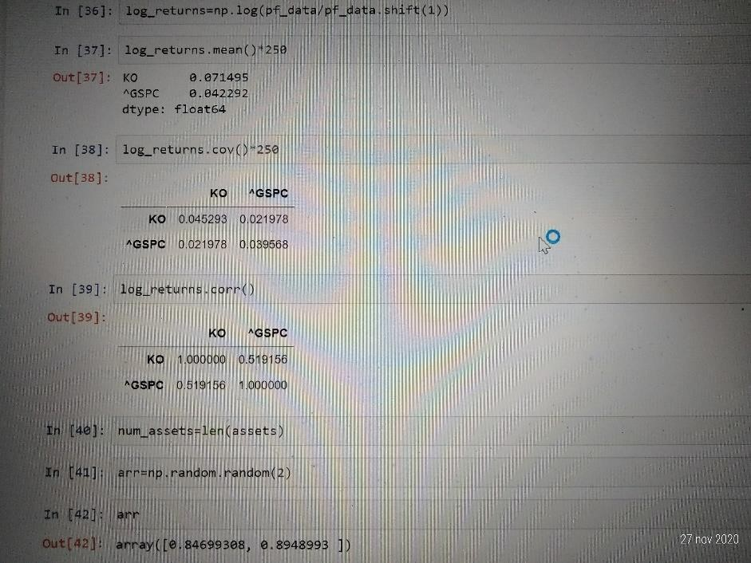
Figure 3.3
So if I want to obtain an efficient frontier composed of these assets we will need their log returns. Then I will need their average return and their covariance and correlation matrices and the returns are well correlated; infact corr=0.519, so grater than 30% and therefore I may say that KO and ^GSPC are well correlate
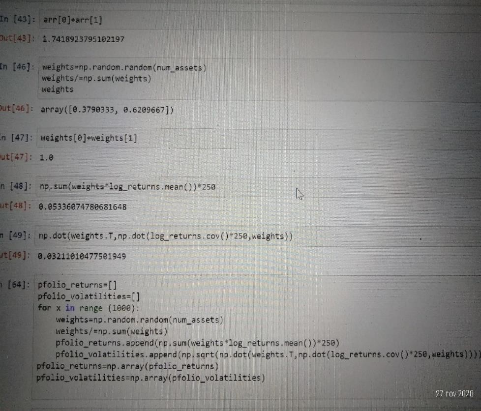
Figure 3.4
Firstly I created two random weights and their sum must be equal to 1. Then I calculated expected portfolio return,expected portfolio variance and volatility respectively. I went through these three cells because I will need the formulas for the return and the volatility in the simulation of the portfolios mean variance combinations.
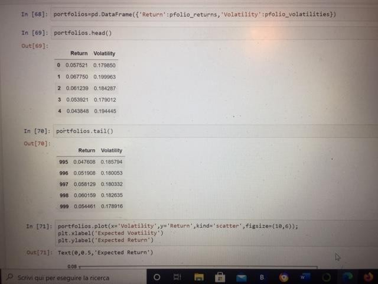
Figure 3.5
I will create a graph where 1000 mean variance simulations will be plotted. I’m considering 1000 combinations of the same two assets KO and the S&P 500. This means I simulate 1000 combinations of their weight values out of the 1000 combinations. First I will create a data frame object containing two columns: one for returns and another one for the respective volatilities. we will call this object portfolios. Its data will be composed of a dictionary with keys return and volatility. I then plot data on a graph and I obtained the following graph:
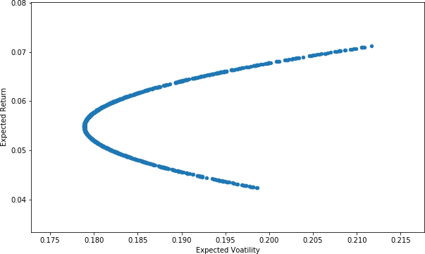
Figure 3.6: This is the efficient frontier
The efficient frontier is the set of optimal portfolios that offer the highest expected return for a defined level of risk or the lowest risk for a given level of expected return. Portfolios that lie below the efficient frontier are sub-optimal because they do not provide enough return for the level of risk. Portfolios that cluster to the right of the efficient frontier are sub-optimal because they have a higher level of risk for the defined rate of return.4
Monte-Carlo simulation can be used to model the development of asset prices such as stocks.
Furthermore the price of an equity share is something we've observed in the past. However its future development is unknown. The only information we have is about past prices. Tomorrow the company's shares could go up or down.
Let's look at the following formula: Yt = Yt-1 er
The price of a share today is equal to the price of the same share yesterday multiplied by esponential to the power of R; where r is the log return of the share.
This equation allows to depict today's stock price as a function of yesterday's stock price and the daily return.
I know yesterday's stock price but we don't know r as it is a random variable. Brownian motion is a concept that would allow to model such randomness. The formula that it can be used is made of two components.
The first one is called Drift and the second one is the stock's volatility.
Drift is the expected daily return of the stock; it is the best approximation about the future we have.
First I'll start by calculating the stocks periodic daily returns over the historical period. I only have to take a natural logarithm of the ratio between current and previous price. Once I have calculated daily returns in the historical period I can easily calculate their average standard deviation and variance.
Drift = AvgDailyReturn - 0.5 * variance
The drift is the expected daily return of the stock.
The second component of a Brownian motion is the random variable it is given by the following equation:
random variable = historical volatility * Z(rand(0,1))
If I assume expected future returns are distributed normally Z of the percentage between 0 to 1 would give us the number of standard deviations away from the mean.
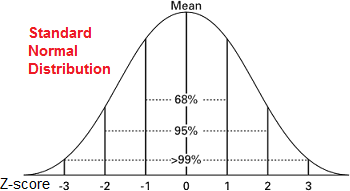
Figure 4.1
I can do that because statisticians have calculated the distance between the mean and events that have a given probability of occurring probability between 0 and 1.
The equation of a stock's price today becomes:
price today = price yesterday * edrift+random variable
If I repeat this calculation 1000 times I'll be able to simulate the development of tomorrows stock price.
In particular I want to predict predict the future stock price of Coca-cola. I will need norm from CPI and some specific map plant lab features.
The time frame under consideration reflects the past 10 years starting from January the 1st 2010. So the first thing I'll do is estimate its historical Log returns.
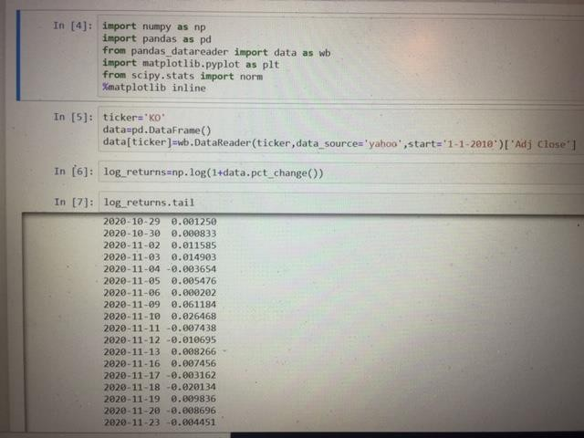
Figure 4.2
in the first graph I can see KO price which has been gradually growing during the past decade. I can also see that during the first part of 2020, the price of the company falled due to covid-19 pandemic.
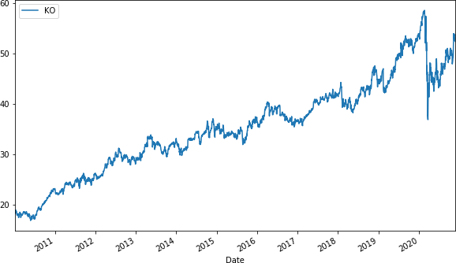
Figure 4.3
In the next graph I plot the log returns the price of KO. (Not the prices!)
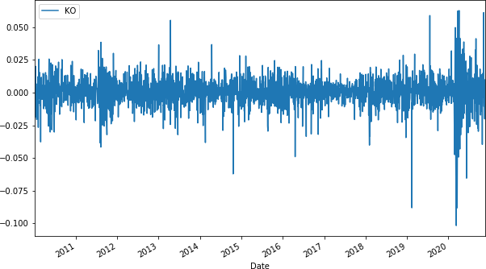
Figure 4.4
The picture tells the returns are normally distributed and have a stable mean.
After that I calculated the mean and the variance. After that I can calculate the drift like the next equation:
Drift = u - 0.5 * var
“U” which is equals the average log return.
I’ve then calculated the 2 components of the Brownian motion, the drift and ???? It is the best approximation of future rates of return of the stock.
Next I created a variable called “stdev”,the standard deviation of log returns.
After that I need to convert these values( the drift and the stdev) into NP.Array.
The second component of the Brownian motion is a random variable z, a number corresponding to the distance between the mean and the events expressed as the number of standard deviations. So PPF code allows to obtain this result. The code are the following:
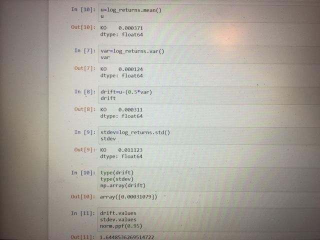
Figure 4.5
To complete the second component I will need to randomize. I did it with the “NP.random.rand” and I have to instert to argument in order to generate a multi dimensional array. So typing 10 and 2,I obtained a 10 by 2 matrix. I will include this random element within the PPf distribution. Those are the codes:
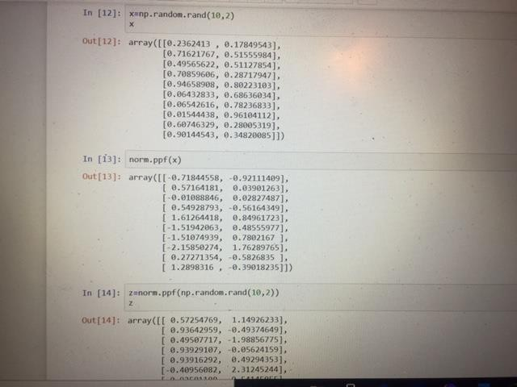
Figure 4.6
The first number(-0.71844)from the first row( of the second array) corresponds to the first probability from the first row of the first matrix( 0.2362413) and so on..
The whole expression corresponding to Z will be of the type Norm.ppf. and I obtained the third array in the previous photo. The newly array uses the probabilities generated by the random function and converted them into distances from the mean zero as measured by the number of standard deviations.
This expression will create the value of Z as defined in the formula
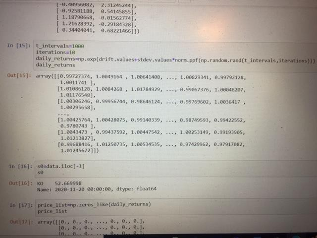
Figure 4.7
Now I will be able to obtain daily returns.
I specify the time intervals equal to 1000 because I’m interested in forecasting the stock price for the upcoming 1000 days.
Then I put iterations equals to 10, which means I will ask the computer to produce 10 series of future stock price predictions.
Now I can express the daily returns as:
daily returns = Er
r = Drift + stdev * z
Like shown in the previous photo I expressed those formulas in the codes, and I obtained an array of 10 sets of 1000 random future stock prices.
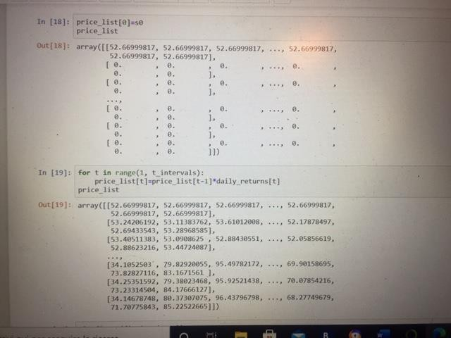
Figure 4.8
I now will create a price list. Remember:
S1=S0*daily returns1
St+1=St*daily returnst+1
...
St+999 = St+998*daily returnst+999
So each price must be equal to the product of the price observed the previous day and the simulated daily return.
Then this process will be repeated 1000 times and we will obtain a prediction of a company's stock price 1000 days from now.
In order to obtain that, I just before created a matrix containing daily returns and I can use it.
The first stock price in our list must be the last one in our data set.
It is the current market price and I called it S0.So the my first stock price is: 52.66 After that I Finally generated values for our price list.
I must set up a loop that begins in day 1 and ends at day 1000.
I can simply write down the formula for the expected stock price on date t: St=St-1*daily returns
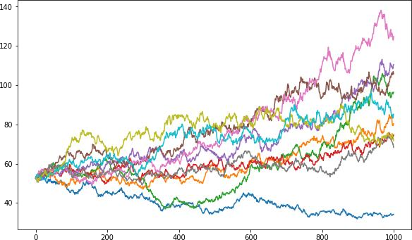
Figure 4.9
When I runned I will obtain 10 possible paths of the expected stock price of Coca Cola stock
starting from the last day for which I have data from Yahoo, like sown in the previous chart.